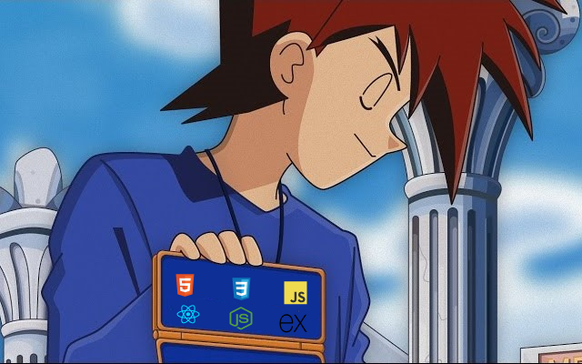

Fullstack.
Al momento de escribir este articulo de blog tengo un poco menos de un año de comenzar mi recorrido en el desarrollo web, desde el inicio, cuando me di cuenta que esto era lo que me gustaba me plantee llegar a lo más alto, y eso para mí en ese momento era el Fullstack.
Tras casi un año de estudiar de manera ferviente tanto tecnologías del Frontend como Backend y los conceptos que cada área abarca me he dado cuenta de muchas cosas sobre el intentar ser un Fullstack, y quisiera poder compartirles esas cosas para que ustedes no cometan el mismo "error".
Quiero aclarar que para nada considero un error el serlo, inclusive se puede decir que "yo lo soy", pero la verdad es que mi corazón está del lado del diseño y el desarrollo de interfaces graficas de usuario más que cualquier otra cosa.
Ahora, quisiera exponer un poco lo que pienso sobre este concepto, lo que me he dado cuenta y cuando creo que es conveniente centrarse en serlo y cuando no.
Un camino muy largo para muchos.
Para ponerlos un poco en contexto, al momento de redactar este escrito estoy a punto de entrar a mi decimo semestre de universidad y fue recién entrando a octavo cuando decidí que quería ser un desarrollador web, un poco tarde lo sé, pero el destino así lo quiso para mí.
A sabiendas de que tenía el tiempo encima me puse a estudiar como loco, y como dije, desde el inicio yo sabía que quería ser un desarrollador Fullstack, por lo que comencé estudiando Frontend con HTML, CSS y JavaScript. Al poco tiempo comencé a estudiar Backend con Node.JS y SQL, y es en este momento donde comencé a indagar en las ofertas laborales y en base a ellas comprendí el como uno debe prepararse para el mundo laboral, pienso que tenemos dos escenarios: el estudiante que tiene tiempo y el que como yo, no lo tiene.
El estudiante con tiempo (con ello me refiero a alguien que entrando a la carrera ya sabe que quiere dedicarse al desarrollo web) es el que considero puede darse el "lujo" de ponerse como meta el ser Fullstack, ya que, cuenta con por lo menos 4 años (el cual es el tiempo mínimo que dura la carrera) para prepararse todo lo posible tanto en Frontend como en Backend e ir saltando de tecnología en tecnología y comprendiendo todos los conceptos que se requieran, porque para ser Fullstack lo que se requiere es tiempo, es un proyecto a largo plazo, no es algo que se logre en un corto periodo de tiempo, pero si se aprovecha todo el tiempo que se está en la carrera es más que suficiente para salir con unas muy buenas bases al campo laboral y postularse a cualquier perfil sea Frontend o Backend.
Ahora hablaré un poco del estudiante con poco tiempo, en este grupo es en donde caigo yo, el estudiante con poco tiempo para prepararse es aquel que se dio cuenta "tarde" (realmente nunca es tarde) de que lo que realmente le gusta es el desarrollo web, y teniendo el tiempo encima realmente no puedes darte ese "lujo" de brincar entre Front y Back, por lo que en este escenario yo no recomiendo para nada el empeñarse en formar un perfil Fullstack, en su caso y realmente es lo que recomiendo y lo que creo que todos deberíamos hacer como desarrolladores es especializarnos, es el mejor camino que podemos tomar en un corto y largo plazo, es mucho mejor para nosotros y para las empresas contratar a alguien que sepa hacer su trabajo sumamente bien y enfrentarse a los grandes problemas de su área que contratar a alguien que sepa hacer muchas cosas pero no pueda hacer frente a estos grandes problemas.
La especialización es el camino más rápido para obtener trabajo, ya que, si ves las ofertas laborales, lo que piden como desarrollador Fullstack a lo que te piden como desarrollador de Frontend o Backend es un mundo de diferencia y ese mundo toma tiempo, tiempo que muchos no tenemos, mi consejo es céntrate en un solo perfil desde el inicio y te prometo que es lo mejor que puedes hacer.
El ser o querer ser Fullstack no tiene nada de malo, pero creo que debemos saber desde el inicio que es algo que toma tiempo y que solo el mismo tiempo te puede ir dando ese perfil, aunque por más que lo sean no olviden especializarse en un área y por el amor de dios nunca digan en una entrevista que se definen a sí mismos como Fullstack.